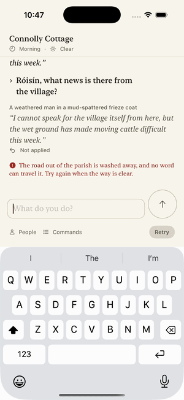

PR #2218: spec Milestone 4 exit demonstration
Issue #2193 (Stability). Simulator demonstration on the iPhone 17 Pro simulator, iOS 26.5, built from main at 219971a54 (including the #2217 fix) with this PR's test changes. This is not a physical-iPhone session: physical-iPhone gates were waived on 2026-10-04. Part 4 runs against live limerick-prod Endpoints. The other parts use the embedded engine on the canonical world, with the scripted Endpoint transport.
Demonstration (7 minutes)
Each part is an XCUITest run paced with TEST_RUNNER_RUNDALE_DEMO_HOLD=3, with a title card before it. The launch home screen is trimmed. Home screens in the middle of a part are the app being switched away or relaunched.
- A draft and a completed trip survive switching apps and a relaunch (P4-01).
- Backgrounding during Mícheál's reply interrupts it. Retry completes it once and keeps the newer draft (P4-02).
- A force-quit at Send, which lands after the command is accepted and saved, leaves one command and a Retry, with no leftover activity (new test).
- Real connection loss against live Endpoints, through a local proxy: every connection dropped, then the reply cut mid-stream and marked "Not applied". Retry commits once, and relaunch keeps only committed replies.
- 75 seconds of the soak: travel, dialogue, reading history, returning to the newest text, and backgrounding.
- Accessibility M to XXXL in dark appearance (P4-07).
Live connection loss

Simulator session results
- 20-minute soak: iPhone 17 Pro 1214 s, iPhone SE (3rd generation) 1205 s. Each ran 50 travel, 50 dialogue and 17 background/foreground cycles with no failure.
- Force-quit at Send (after acceptance), during streaming, at the last chunk and after commit: one command each time, no duplicate reply, and Retry only when nothing committed. Both sizes. An unsent draft survives termination (P4-01); a kill between Send and acceptance was not run.
- Reduce Motion: two knot captures 1.1 s apart are identical with it on and different with it off.
- Not run (simulator cannot): VoiceOver, dictation, airplane mode, lock-screen data protection, App Attest, Instruments budgets.
The full record is in docs/test-plans/results/2026-10-07-milestone-4-exit.md.